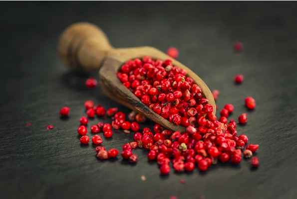
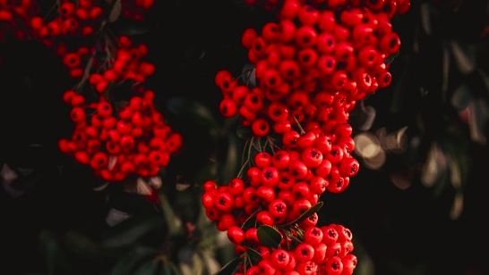
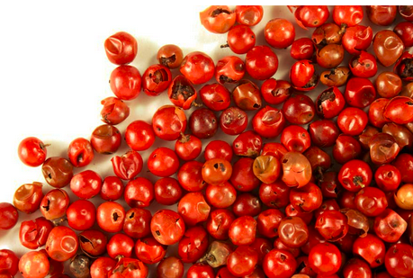

First of all, you might be surprised to discover that pink peppercorns aren't really peppercorns at all. They are the ripe berries of the pepper trees in Peru (Schinus molle) and Brazil (Schinus terebinthifolius). But they're the same size and shape as regular peppercorns and taste peppery, so you'd have to be a real stickler to tell someone they're wrong for calling them by their common name. Pink peppercorns belong to the same family as cashews.

Pink pepper comes from two trees called the Baies Rose Plant and the Peruvian Pepper tree. The black pepper from Southeast Asia is not related to these trees, which grow in South America. Pink peppercorns don't taste like real peppercorns, which is the best way to tell that they aren't real peppercorns. Pink pepper is hot, just like black pepper, but the heat lasts longer than it does with black peppercorns. In fact, some people think the heat is more like that of chilli peppers than like that of black peppercorns, which aren't very hot. The spice is also unique because it is sweet and has a piney taste, which some people say is similar to the taste of juniper berries.
Pink pepper, like pepper cubebe, is a great natural remedy for its diuretic, antiseptic and disinfectant properties. It is used in case of rheumatism, menstrual spasm, bronchitis, urinary system infections. It is chewed as a simple remedy for colds, coughs and asthma in its country of origin.
Whole pink peppercorns are very spicy, so they are often mixed with black, green, and/or white pepper more for how they look than how they taste. Still, any good chef should be able to use the flavour of the pink peppercorn to enhance both savoury and sweet dishes.
